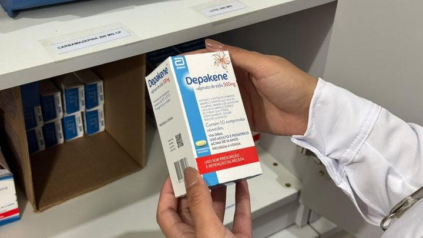
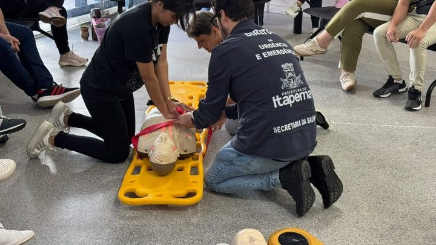

Itapema · SaúdeItapema passa a entregar remédio controlado em 2 das 13 UBS, e a nota da Prefeitura pede só documento, sem citar receita
A mesma rede de 13 unidades, vista pela farmácia.
A nota da Prefeitura de 19 de outubro marca o Dia D do Outubro Rosa para este sábado, 24 de outubro, das 9h às 16h, com todas as unidades abertas, e avisa que três delas não vão vacinar: Alto São Bento, Meia Praia II e Sertãozinho. Fomos conferir na página da Secretaria de Saúde. Alto São Bento e Meia Praia II têm sala de vacina de segunda a sexta, com horário publicado. Sertãozinho é a única das 13 UBS que não tem sala de vacina na lista oficial. Sobram 10 unidades vacinando no sábado, contagem nossa. E em nenhuma das três notas do Outubro Rosa deste ano aparece a palavra mamografia.
Em 30 segundos · Modo de Leitura, formato original Santa Informa
A Prefeitura de Itapema marcou o Dia D do Outubro Rosa para este sábado, 24 de outubro.
O horário é das 9h às 16h.
Abrem todas as Unidades Básicas de Saúde da cidade.
São 13 UBS, pela lista da própria Secretaria de Saúde.
O que tem: exame preventivo, vacinação e outros atendimentos.
Três unidades ficam fora da vacinação.
São Alto São Bento, Meia Praia II e Sertãozinho.
Elas abrem normalmente para o resto, só não vacinam.
Fomos conferir essa lista na página da Secretaria.
Alto São Bento tem sala de vacina de segunda a sexta, das 8h às 11h30 e das 13h às 16h30.
Meia Praia II também tem, das 8h às 11h e das 13h às 16h30.
Ou seja: as duas vacinam na semana e param no sábado.
Sertãozinho é outra história.
Ela é a única das 13 que não tem sala de vacina na lista oficial.
Sobram 10 UBS vacinando no sábado, contagem nossa.
No ano passado o Dia D foi em 18 de outubro, uma semana mais cedo.
E aplicou 448 doses de vacina, pela nota da Prefeitura.
Tem uma palavra que não aparece na programação deste ano.
Mamografia.
Lemos as três notas do Outubro Rosa de 2026, de 1º, 6 e 19 de outubro.
Nenhuma delas cita mamografia nem carreta de exame.
Em 2025 a unidade móvel do Sesc esteve na cidade.
Só na primeira semana ela fez 111 mamografias e 79 preventivos.
O preventivo que o sábado oferece é o do colo do útero, que é outro exame.
Quem fala pela Secretaria agora é o secretário Adriano Pivotto.
No começo do mês quem assinava era a secretária interina Marines Kepler Nunes.
A programação do Outubro Rosa segue até 31 de outubro.
No dia 31 tem a Pink Run, às 18h, na orla do Centro.
Poder PúblicoPublicada em Redação Santa Informa

A Prefeitura de Itapema marcou para este sábado, 24 de outubro, das 9h às 16h, o Dia D do Outubro Rosa, com todas as Unidades Básicas de Saúde abertas para exame preventivo, atualização da caderneta de vacinação e outros atendimentos. A nota publicada em 19 de outubro avisa, no fim, que três unidades ficam fora da vacinação: Alto São Bento, Meia Praia II e Sertãozinho. Elas abrem para o resto. Fomos conferir essas três na página da própria Secretaria de Saúde, e duas delas vacinam de segunda a sexta.
A página da Secretaria de Saúde lista 13 UBS em Itapema, com endereço, chefe de unidade e horário de cada serviço. Doze delas têm sala de vacina. A Alto São Bento abre a sala das 8h às 11h30 e das 13h às 16h30, de segunda a sexta. A Meia Praia II abre das 8h às 11h e das 13h às 16h30, no mesmo intervalo de dias. As duas estão na lista das que não vão vacinar no sábado. A Sertãozinho é o terceiro nome da nota e é um caso diferente: ela é a única das 13 que não traz sala de vacina na página oficial, então não vacinar no sábado é o que ela já faz na semana. Sobram 10 UBS com vacina no Dia D. A contagem é nossa.
O Dia D de 2025 foi em 18 de outubro, também num sábado, uma semana mais cedo no calendário. A nota da Prefeitura daquele ano registrou 448 doses aplicadas, com HPV, poliomielite, meningite, covid, sarampo e dengue, além de preventivo, teste rápido e roda de conversa. A nota deste ano não traz meta nem número esperado. Mudou também quem assina: em 2025 quem falava era o secretário Fabrício Lazzari; na abertura do Outubro Rosa deste ano, em 1º de outubro, quem assinava era a secretária interina Marines Kepler Nunes; agora é o secretário Adriano Pivotto.
Lemos as três notas que a Prefeitura publicou sobre o Outubro Rosa de 2026, em 1º, 6 e 19 de outubro. Nenhuma delas cita mamografia, nem unidade móvel, nem carreta de exame. O que aparece é o preventivo, que é o exame do colo do útero e não enxerga a mama. Em 2025 a cidade recebeu a unidade móvel do Sesc Saúde da Mulher, e só na primeira semana saíram 111 mamografias e 79 preventivos, pela nota da Prefeitura de 21 de outubro daquele ano. O atendimento seguia até 5 de dezembro. Perguntar se a carreta volta é o que ficou de fora de todas as notas de agora.
O resumo de 30 segundos está no topo e a versão completa é o texto acima. Aqui ficam as três leituras da casa sobre o mesmo assunto.
Clara, a otimista
Abrir as treze unidades num sábado é resolver o problema de quem não consegue ir durante a semana, e o secretário disse isso com todas as letras. Quem trabalha de segunda a sexta tem um dia no mês em que a UBS do bairro está aberta das nove às quatro, sem precisar negociar folga com o chefe.
E a conta da vacina é melhor do que o aviso faz parecer. Das treze unidades, dez vacinam no sábado. A Sertãozinho nem na semana vacina, então o que sobra mesmo de diferença são duas. Olhando assim, a cidade mantém quase toda a rede de imunização aberta num dia em que normalmente nada abriria. Isso é bastante.
Seu Prudêncio, o criterioso
Merece atenção a lista das três unidades sem vacina. Alto São Bento e Meia Praia II têm sala de vacina de segunda a sexta na página da própria Secretaria, com horário publicado. No sábado elas abrem e não vacinam, e a nota não diz o motivo. Pode ser escala de pessoal, pode ser rede de frio, pode ser decisão de concentrar a imunização nas unidades maiores. Qualquer uma dessas explicações cabe em uma linha, e a linha não está lá. Quem mora no Alto São Bento e lê rápido pode sair de casa achando que vai atualizar a caderneta.
Vale acompanhar também a questão da mamografia. As três notas do mês falam em preventivo, que é o exame do colo do útero. Mamografia é outro exame, e não aparece em nenhuma delas. No ano passado a unidade móvel do Sesc fez cento e onze mamografias só na primeira semana, e aquilo foi notícia da Prefeitura. Este ano o texto não diz nem que tem nem que não tem. Uma sugestão útil seria a Secretaria publicar uma linha sobre rastreamento de mama: onde se agenda, a partir de que idade, com que intervalo.
Dito isso, é justo reconhecer que a nota faz uma coisa que muita nota oficial não faz: ela avisa, antes do dia, quais unidades não terão o serviço. Isso é o contrário de deixar o morador descobrir na porta. O aviso existe, está publicado com cinco dias de antecedência e nomeia as três unidades. Falta só a razão e o detalhe do preventivo, e aí o leitor sai do texto sabendo tudo o que precisa.
Caco, o sarcástico
Sábado tem Dia D do Outubro Rosa em todas as UBS de Itapema. Todas as treze. Menos três, que abrem mas não vacinam. Então todas as dez, com três de companhia.
Reclamação registrada: duas dessas três vacinam de segunda a sexta, horário publicado no site, das oito às onze e meia e da uma às quatro e meia. Chega o sábado, dia do mutirão, e a sala tira folga. A terceira, a Sertãozinho, não vacina nunca, então ao menos foi coerente.
Mas tá bom porque dez unidades abertas num sábado é mais do que zero unidades abertas em todos os outros sábados do ano. Chama-se progresso: a rede inteira abriu, com asterisco.
Fontes: A data de 24 de outubro, o horário das 9h às 16h, a abertura de todas as UBS, a oferta de preventivo, vacinação e outros serviços, a informação de que as UBS Alto São Bento, Meia Praia II e Sertãozinho não oferecerão vacinas e a fala do secretário de Saúde Adriano Pivotto estão em Itapema realiza Dia D do Outubro Rosa neste sábado em todas as UBS, nota da Prefeitura de Itapema de 19 de outubro de 2026, aberta e lida por nós em 20 de outubro. A lista das 13 Unidades Básicas de Saúde, com endereço e horário de sala de vacina de cada uma, está na página Secretaria de Saúde do site da Prefeitura, lida por nós em 20 de outubro de 2026: é dela que saem os horários da UBS Alto São Bento e da UBS Meia Praia II e a ausência de sala de vacina na UBS Sertãozinho. A contagem de 10 unidades com vacina no Dia D é nossa, feita cruzando as duas páginas. A programação do Outubro Rosa de 2026, com a Pink Run de 31 de outubro, está em Itapema abre Outubro Rosa com mobilização pelo cuidado à saúde da mulher, de 1º de outubro de 2026, e em Campanha Outubro Rosa mobiliza UBS de Itapema com ações de conscientização, de 6 de outubro de 2026. São essas duas, mais a nota do Dia D, as três notas em que procuramos a palavra mamografia e não achamos. O Dia D de 18 de outubro de 2025 e as 448 doses aplicadas estão em Dia D mobiliza UBS de Itapema com vacinação e ações do Outubro Rosa, de 20 de outubro de 2025. As 111 mamografias, os 79 preventivos, a unidade móvel do Sesc Saúde da Mulher e o atendimento até 5 de dezembro estão em Atendimentos do Outubro Rosa continuam em Itapema, de 21 de outubro de 2025. O número de 13 UBS já aparecia em Itapema passa a entregar remédio controlado em 2 das 13 UBS, nossa matéria de 18 de outubro de 2026. Não falamos com a Secretaria de Saúde de Itapema para esta matéria.

Itapema · SaúdeA mesma rede de 13 unidades, vista pela farmácia.

Itapema · SaúdeOutra vez a rede de UBS, agora no treino de urgência.
Saúde pública na praia, medida coleta a coleta.